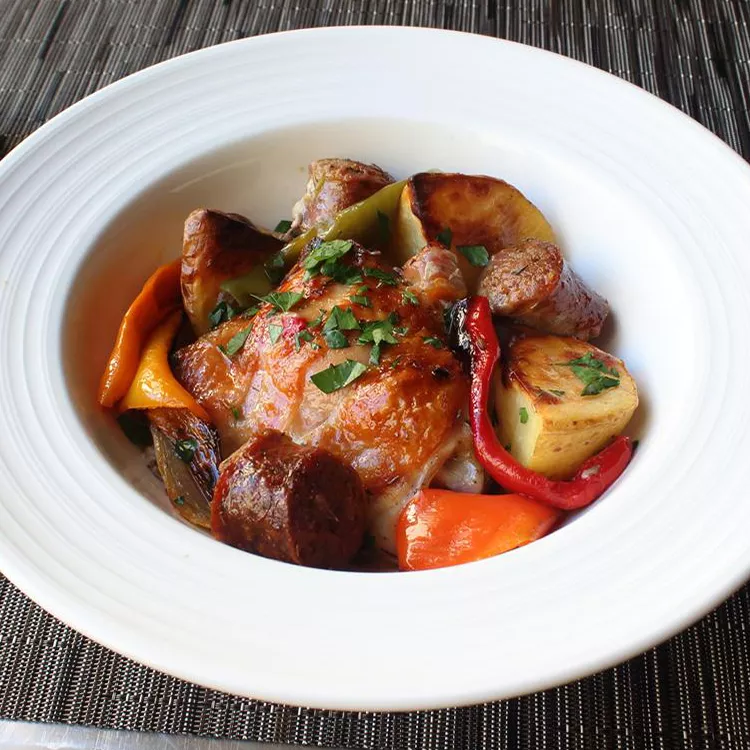

Chicken, sausage, and peppers are roasted with Yukon Gold potatoes in a very hot oven until beautifully caramelized. You'll need a large, heavy-duty roasting pan (or a couple of smaller ones) for this delicious dish.